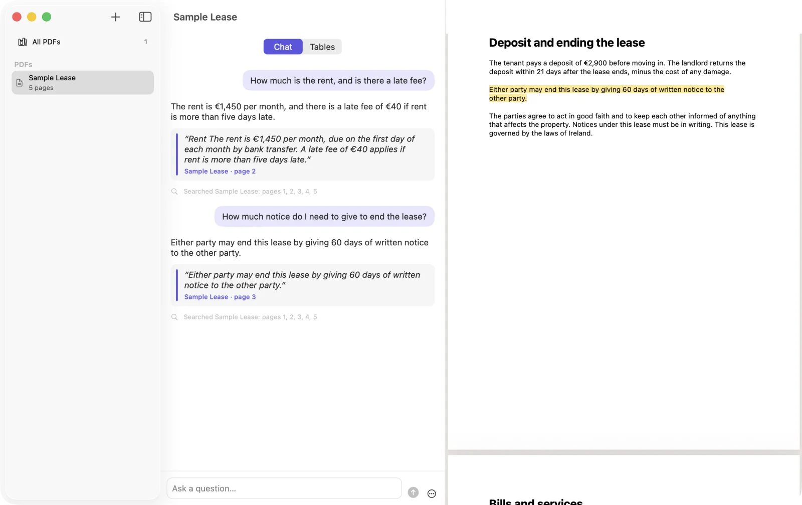
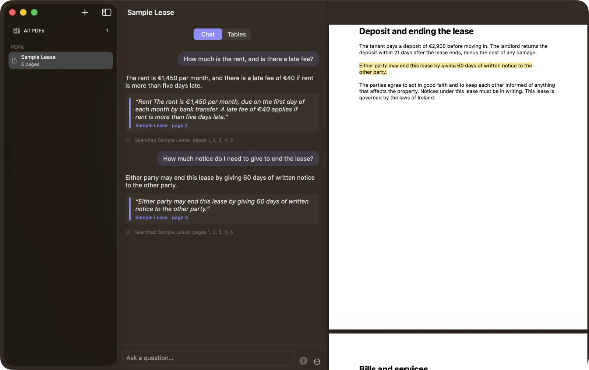

Ask from anywhere
Press ⌃⌥P in any app. A small box asks your whole library, like Spotlight.
Pagewise answers questions about your PDFs with Apple’s AI, on your Mac. Every answer shows the sentences it came from. Click one, and there it is, highlighted on the page.
Free and open source. No account. Needs macOS 26, Apple silicon and Apple Intelligence.


The AI on your Mac is private and free, but small. It can only read a few pages at a time, and it can make things up. So Pagewise never just trusts it.
Press ⌃⌥P in any app. A small box asks your whole library, like Spotlight.
With a PDF open in Preview, the box asks about that one. No importing.
Point it at Downloads or Documents. New PDFs are added and indexed by themselves.
Find every table in a PDF. Copy it as CSV, or save it as a spreadsheet file.
Pages with no text are read with Apple’s text reader, so scans work like any PDF.
Sums up each part, then the whole. Long PDFs are fine.
Ask a single PDF, a few you pick, or your whole library at once.
The index is saved, so a PDF you added last month answers straight away.
Answers in the language you ask in, or one you pick.
Free and open source. Checked by Apple for malware. Updates itself.